Learners have already been introduced to series and parallel circuits in Grade 8. However, they will now learn more detail about how the circuits function. They will be introduced to the concept of potential difference. It would be useful to revise some of the investigations covered in the Grade 8 syllabus as activities this year. Some of these activities have been included here in the Gr 9 workbook again. You can easily access the Gr 8 content online at www.curious.org.za. This will help learners to remember and revise the concepts that they learned a full year ago. If you feel that learners already grasp these concepts, then rather spend more time on the investigations. As an extension, you can do more calculations in class. Some calculations have been included here, such as calculating resistance given the potential difference and current.
Note:In CAPS, the term 'voltage' is predominantly used, however, here in these workbooks, the term 'potential difference' is rather used as this is the correct scientific term to use. Potential difference is also the term used in FET level and beyond.
If you only teach Natural Sciences, it is a good idea to check with the Technology teachers to see how these two curriculums complement each other, especially with regard to electricity. Some of the concepts which might be introduced for the first time in Natural Sciences, have already been covered in the Technology curriculum. Knowing what learners have already covered and been introduced to will help make your classes more efficient and more stimulating for learners.
A useful device to use in the investigations and activities in this chapter is a multimeter. Find out more about multimeters and how to use them in this video: bit.ly/16qtjg6 Remember that you just need to type this link into the address bar in your internet browser and press enter, in order to access the video.
4.1 Series circuits (3 hours)
Tasks
Skills
Recommendation
Investigation: What is the effect of the number of cells connected in series on current and potential difference?
Investigating, predicting, hypothesising, taking readings, observing, analysing and displaying data
CAPS suggested
Investigation: The effect of the number of cells connected in series on current strength and potential difference
Following instructions, observing, describing, explaining
CAPS suggested
What happens when we add cells in series or parallel?
What happens when we add resistors in series or parallel?
What is potential difference?
How do we connect ammeters and voltmeters in circuits?
Series circuits
series circuit
potential difference
voltage
A series circuit provides only one path for electric current to move through the circuit.
A useful video to revise electricity and circuits.bit.ly/15XAKOK
Series circuit
Draw a circuit diagram for this circuit
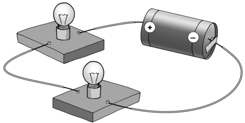
The circuit diagram for the above circuit is as follows:
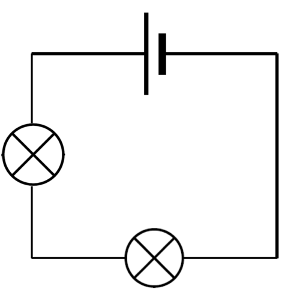
Remember that a battery is a group of cells connected together.
How many cells and how many resistors are in the above circuit?
There is one cell and there are two resistors (light bulbs).
What happens when more cells or resistors are added into a series circuit? We are going to investigate the effects on the current and the potential difference in series circuits.
You might have learned about potential difference in Technology already, but this is the first time we are investigating it in Natural Sciences.
What is potential difference?
A useful video to watch in order to explain potential difference and current to your learners, in terms of the analogy of a river. This video was not included in the learners book as some of the concepts are beyond the scope of the curriculum at this stage, such as a coulomb of charge. bit.ly/Havmzk
Some people often use the termvoltage to describe the potential difference. This is based on the fact that we measure potential difference in volts. Voltage is not the scientific term, and potential difference is the more correct term to use.
Potential difference is the difference in potential energy per charge between two different points in an electric circuit. Here is a simpler explanation: potential difference tells us how much energy per charge the electrons are losing when they pass through a resistor or how much they are gaining when they pass through the cell or battery. The electrons "lose" energy because they have transferred it to the resistor in the form of heat, light or sound. Electrons "gain" energy when they pass through the cell or battery because of the chemical energy from the battery being transferred to the electrons.
The potential difference is measured by a voltmeter.The unit of potential difference is thevolt
The volt is named in honour of the Italian physicist Alessandro Volta (1745-1827), who invented the voltaic pile, the first electric battery which could deliver a continuous electric current.
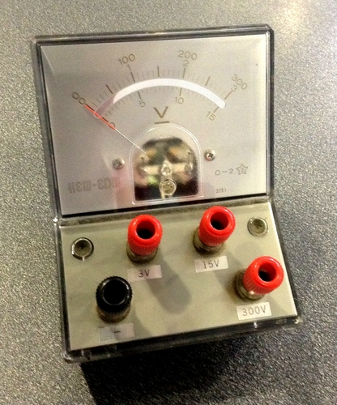A voltmeter.
The voltmeter has a very high internal resistance and must be connected in parallel with the component you are measuring. You therefore need to connect it to two different points (which are usually, before and after a resistor). The voltmeter calculates the potential difference between those two points. An example illustrating the placement of a voltmeter at two points, (A and B) is indicated in the diagram below.
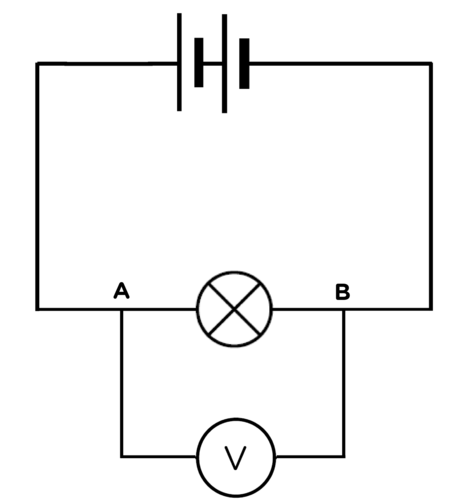This voltmeter is connected in parallel with the bulb and measures the potential difference between points A and B.
If you connect the voltmeter in series, there will not be two different points as you connect it to the same wire with the same potential difference. What do you think would happen if you connected the voltmeter in series in the circuit? Explain your answer.
This would affect the current in the circuit as the voltmeter provides a very high resistance so the current would not flow through the circuit, or there would be a very small current.
What do we use to measure the current in a circuit?
An ammeter.
How do we connect this device into a circuit? Explain why this is so.
The ammeter is connected in series as we need to measure the current so all the current must flow through the ammeter.
Do you think the ammeter has a large or a small resistance? Explain your answer.
The ammeter has a very small resistance so that it does not oppose the current and affect the reading.
Draw a circuit diagram in the following space to illustrate an ammeter, a light bulb and a cell connected in a circuit.
The circuit should look as follows with the ammeter in series:
The following photo shows a voltmeter connected in parallel and an ammeter connected in series.
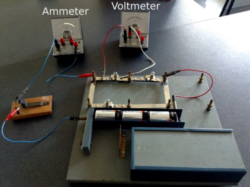
Cells in series
When cells are connected together they are called a battery. What happens when we put more than one cell in a circuit? Let's investigate what happens when we add cells, in series, to a circuit.
If you do not have sufficient equipment to allow all the learners to attempt these circuits. Use the PhET simulation software which can be obtained from bit.ly/17vBMBX
Before allowing your students to use the PhET simulations there are several things you should familiarise yourself with regarding the software. Make sure you know how to:
add components to a circuit. You need to click and hold down and drag the components from the side of the screen to where you want them.
connecting components with wires. You can place a wire onto the screen and then drag the ends till they meet up with the component. Make sure that you are careful when connecting light bulbs. The system will create a short circuit if they are not connected correctly. This will require some practice.
delete wires or components or to add parts. You can't just add after the circuit is built, just as in a real circuit you need to disconnect components to make space for new ones. Right-click with the mouse on the junction between two components and it will give you the option to disconnect. Right-click on the component itself, and you will be given the option to remove the entire component.
use the voltmeter and ammeter. The non-contact ammeter is very useful but the other one is more realistic.
clear the image to start something else. Your learners can save their circuits for future use if your lesson is interrupted and then load them again when you need them. If they need a blank screen in order to start again, then click on the "reset all" button.
reset the resistance of a resistor or light bulb or to change the potential difference of a battery. Right-click on the component and you will be given the option to adjust the settings.
What is the effect of the number of cells connected in series on current and potential difference?
HYPOTHESIS:
Write a hypothesis for this investigation.
Possible hypothesis:
Increasing the number of cells connected in series will increase the current strength and potential difference in the circuit.
Remember that a hypothesis does not have to be "correct", it only needs to mention which variables are being considered and the relationship that is expected to be observed.
MATERIALS AND APPARATUS:
three 1,5 V cells
insulated copper conducting wires with crocodile clips
ammeter
voltmeter
resistor or light bulb
If you are using a light bulb and not an ammeter to see the effect, then take note of the brightness of the bulb as you add more cells in series.
METHOD:
Construct a series circuit with 1 cell, a resistor and the ammeter in series.
Connect the voltmeter in parallel with the cell as shown in the following circuit diagram.
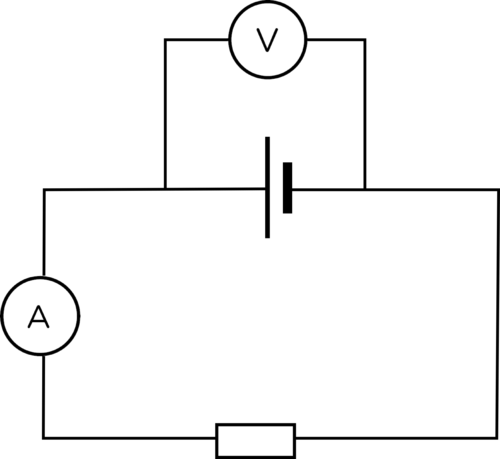
Record the readings on the ammeter and voltmeter in the table below.
Add a second cell in series with the first cell.
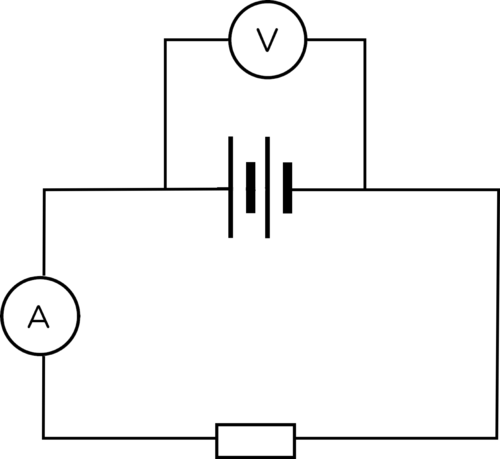
Record the new readings on the ammeter and voltmeter in the table below.
Add the third cell in series with the other two cells.
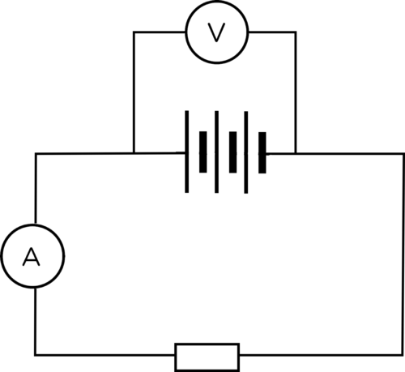
Record the new readings on the ammeter and voltmeter in the table below.
Draw a graph of your results.
RESULTS:
Remember that the units of measurement are noted in the heading for a column in a table and not written in each cell in the table.
Complete the following table:
Number of cells
Ammeter reading (A)
Voltmeter reading (V)
1
2
3
Use your table to draw two line graphs on the same set of axes. One graph should be the number of cells against the current (ammeter reading) and the other graph should be the number of cells against the potential difference (voltmeter reading). Decide which are your independent and dependent variables in this investigation. Draw a line of best fit through the data points.
Learners should plot the number of cells along the x-axis as this is the independent variable. Learners can draw two separate graphs. The plotted points must be visible and learners must draw a line of best fit. Learners must provide a heading for their graph.
A line of best fit (or 'trend' line) is a straight line that best represents the data on a scatter plot. To draw a line of best fit, balance the number of points above the line with the number of points below the line. This line may pass through some of the points, none of the points, or all of the points.
If you used a light bulb instead of a resistor, what happened to the brightness of the bulb as you added more cells in series? If you did not do this, predict what would happen.
Adding more cells in series increases the brightness of the bulb.
CONCLUSION:
What can we conclude happens to the current strength and potential difference as more cells are added in series?
Connecting more cells in series into a circuit increases the current strength in the circuit and the potential difference across the cells.
What have we learned? Increasing the number of cells connected together in series increases the strength of the current in the circuit and the potential difference across the cells.
Interact with this simulation to learn more about electric circuits.bit.ly/1gqqTIa
The effect of the number of cells connected in series on current strength and potential difference
This is an optional investigation using PhET (Physics Education Technology) online simulations. You might do this in class with your teacher or else you can visit the website and interact with the simulation in your own time.
This is an optional investigation. This is essentially the same as the previous investigation but relies solely on the PhET simulation software. The PhET simulation gives concise results which are easier to graph and does not require actual lab equipment.
HYPOTHESIS:
Write a hypothesis for this investigation.
Possible answer: Increasing the number of cells connected in series will increase the current strength and potential difference in the circuit.
Construct a series circuit with 1 cell, a resistor and the ammeter in series in the PhET simulation. Drag and drop each component to create the circuit
Connect the voltmeter in parallel with the cell.
Record the readings in the table below.
Add a second cell in series with the first cell.
Record the new readings in the table below.
Add the third cell in series with the other two cells.
Record the new readings in the table below.
Draw a graph of your results.
RESULTS:
Complete the following table:
Number of cells
Ammeter reading (A)
Voltmeter reading (V)
1
2
3
Use your table to draw two line graphs. One graph should be the number of cells against the current (ammeter reading) and the other graph should be the number of cells against the potential difference (voltmeter reading). Decide which are your independent and dependent variables in this investigation.
CONCLUSION:
What can we conclude regarding the effect on the current strength and potential difference of adding cells in series into a circuit?
Connecting more cells in series into a circuit increases the current strength in the circuit and the potential difference across the cells.
Resistors in series
Let's revise some of the work we covered in Gr 8 about series circuits.
Increasing the resistance in a series circuit
This is a revision activity of what learners covered in Gr 8. It can also be done concurrently with the following investigation to look at the effect on the potential difference.
Watch how the brightness of the bulbs changes as you add more in series.bit.ly/H6suDb
MATERIALS:
1,5 V cell
3 torch bulbs
insulated copper conducting wires
switch
ammeter
The switch is not an essential part of this investigation. It can be left out of the circuit. If you do not have an ammeter, then use the brightness of the bulbs to indicate current strength.
INSTRUCTIONS:
Construct the circuit with the cell, the ammeter, 1 bulb and the switch in series.
Close the switch.
Note how brightly the bulb is shining and record the ammeter reading. Draw a circuit diagram.
Circuit 1
Open the switch.
Add another light bulb into the circuit.
Close the switch.
Note how brightly the bulbs are shining and record the ammeter reading. Draw a circuit diagram.
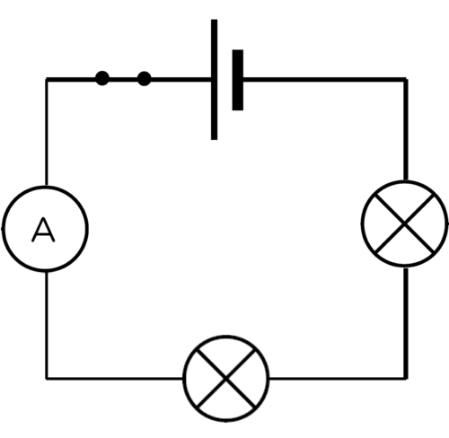Circuit 2.
Open the switch.
Add the third light bulb into the circuit.
Close the switch.
Note how brightly the bulbs are shining and record the ammeter reading. Draw a circuit diagram. Draw circuit diagrams for the three circuits that you built.
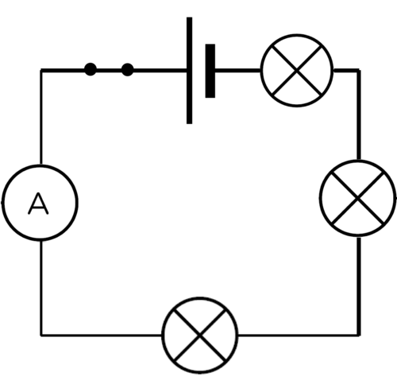Circuit 3.
Record the ammeter readings in the following table:
Number of bulbs (resistors)
Ammeter reading (A)
1
2
3
QUESTIONS:
What happened to the brightness of the bulbs and the ammeter reading as more light bulbs were added to the circuit?
The brightness of the bulbs decreased and so did the ammeter reading.
Explain the observations you made in question 1.
As the number of light bulbs increased, the resistance in the circuit increased. The increase in resistance caused the current to decrease.
If we increase the resistance in a series circuit, by adding more resistors, then the total current decreases. We say the current is inversely proportional to the resistance. We are now going to look at the potential difference of each resistor.
Measuring the potential difference across components in a series circuit
This will have to be a demonstration if you do not have enough equipment for the learners to do this in small groups. If you have access to the internet, allow the learners to use the PhET simulations. Their results will also be more accurate as laboratory voltmeters might not be calibrated accurately enough.
INVESTIGATIVE QUESTION:
What is the relationship between the potential difference across the battery and the potential difference across the resistors in a series circuit?
MATERIALS AND APPARATUS:
three 1,5 V cells
insulated copper conducting wires with crocodile clips
two resistors of different resistances
three voltmeters
a switch
If you do not have two different resistors, you can just use two light bulbs, but you will not then be able to make a direct comparison between potential difference and resistance if you do not know the resistances.
METHOD:
Construct a circuit with three 1,5 V cells, two resistors and the switch in series with each other.
Connect a voltmeter, in parallel, across the three cells. This is voltmeter V1.
Connect a second voltmeter, in parallel, across one resistor. This is voltmeter V2. Take note of whether this is the resistor with the higher or lower resistance.
Connect the third voltmeter, in parallel, across the other resistor. This is voltmeter V3. Take note of whether this is the resistor with the higher or lower resistance.
Record the readings on the 3 voltmeters.
If the learners are doing this investigation in small groups, make sure that their circuits are correct and that the voltmeters are connected in parallel.
RESULTS AND OBSERVATIONS:
Draw a circuit diagram to illustrate your circuit. Take note of which resistor has the highest resistance.
The orientation of the components in the circuit is not important. The battery can be drawn at the top, bottom or right hand side of the circuit diagram. It is important that the learners have used the correct symbols; that the resistors and cells are in series with each other and that the voltmeters are connected in parallel to the components they are measuring.
Reading on V1:
Reading on V2:
Reading on V3:
Record these readings on your circuit diagram above as well.
These readings will depend on the experimental set-up available in your school lab or on the PhET simulations. The trend should be that the readings on V2 and V3 add up to V1.
What do you notice about the readings on V2 and V3 when compared to V1?
Learners responses may vary but they should notice that the readings on V2 and V3 are less than that on V1.
Add the readings on V2 and V3 together. What do you notice?
This answer will depend on the accuracy of the readings on the voltmeters. The learners should see that the sum of V2 and V3 is equal to the reading on V1 (ie. V2 + V3= V1).
Which resistor has the highest potential difference, the one with the higher or lower resistance?
The resistor with the higher resistance has the higher potential difference across it.
CONCLUSIONS:
Write a conclusion for this investigation.
The total potential difference across the battery is equal to the sum of the potential differences across each of the resistors. A resistor with a higher resistance will have a higher potential difference.
What have we learned? The sum of the potential differences across the resistors in a series circuit is equal to the potential difference across the battery.
If a resistor has a high resistance then it will have a large potential difference. If a resistor has a low resistance then it will have a small potential difference. We can explain this because the battery provides the electrons with potential energy. The electrons travel through the resistors and lose some of that energy to each resistor in the form of heat, light or sound. There is only one path for the electrons to travel and so they transfer energy to each resistor through which they pass. The higher the resistance of the resistor, the more energy is transferred within the resistor. Therefore, there will be a greater difference in potential energy per charge from before to after the resistor in the series circuit.
Let's look at the following example:
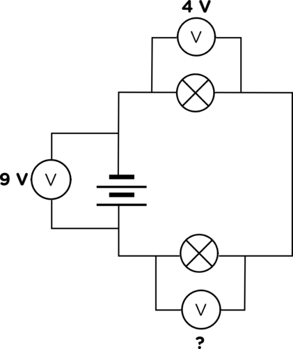
If the potential difference across the cells or battery is 9 V and the potential difference across one of the bulbs is 4 V, what would the reading on the third voltmeter be?
The potential differences across the two resistors must add together to give the potential difference across the battery. This means that the missing reading is 9 - 4 = 5 V.
We say that resistors in series are potential dividers.
Check your knowledge of series circuits
This activity will allow the learners to practice and test their understanding of the concepts they have learned so far. Let each learner make their own predictions. If you have access to the PhET software, allow each learner to set up the circuits using PhET to test their predictions. If you do not have enough equipment to allow individual learners to build the circuits, either build one set of circuits to demonstrate to the class or allow them to work in small groups. If the learners are in groups, make sure that each learner gets a turn to build a circuit in order to make sure they have the skills to do so.
Learners should be left to make their own predictions without any help. This will also teach them the idea of making predictions (hypotheses) and testing them, the essence of scientific exploration. As a result the predictions will be learner-dependent.
MATERIALS:
batteries (or cells)
torch bulbs
insulated copper conducting wires
ammeters
INSTRUCTIONS:
Look at the circuit diagrams in the table. Assume that each bulb is the same.
I.
II.
III.
IV.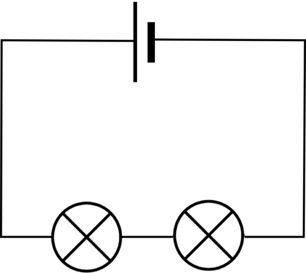
V.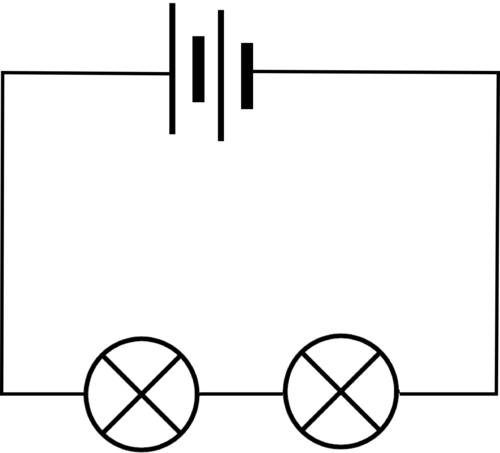
VI.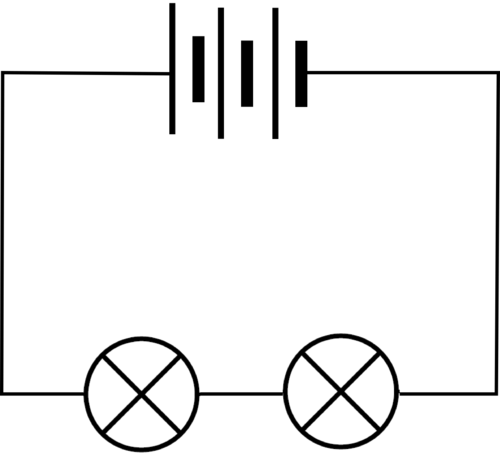
VII.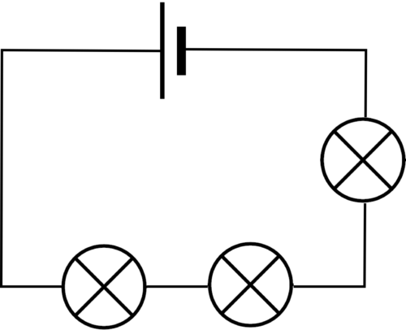
VIII.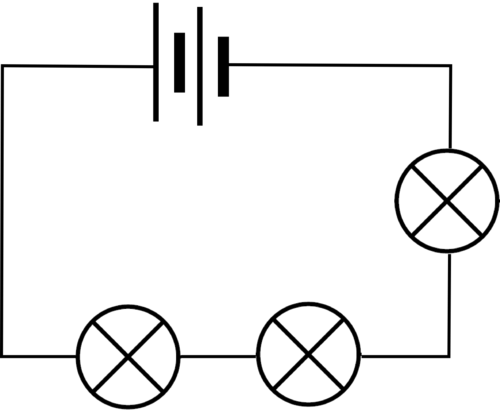
IX.
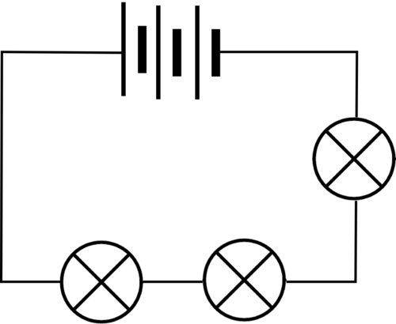
Predict in which circuit each bulb will glow the brightest. On what did you base your prediction?
Learner-dependent answer.
Predict in which circuit each bulb will glow the dimmest. On what did you base your prediction?
Learner-dependent answer.
Why will the brightness of bulbs I, V and IX will be the same?
Learner-dependent answer.
Now test each of your prediction by building the different circuits. Include an ammeter in the circuits in order to measure the current.
Learner-dependent answer.
The brightest bulb should be in circuit III as it has the largest current with the least resistance. The dimmest bulb should be circuit VII as it has the smallest current with the largest resistance.The bulbs in circuits I, V and IX should be the same brightness if they are of the same resistance. Learners can test their predictions by setting up PhET simulations. Use the following website bit.ly/17vBMBX
We have now seen that the current is affected by adding more cells and resistors in series, but so far we have only measured the current at one point in the circuit. Let's see how the current compares at different points in the circuit.
Current in a series circuit
This is a revision activity as learners would have covered this in Gr 8.
MATERIALS:
insulated copper connecting wires
two 1,5 V cells
two torch light bulbs
ammeter
INSTRUCTIONS:
Set up a series circuit with two cells and two torch light bulbs in series with each other.
Insert an ammeter in series between the positive terminal of the cells and the first torch bulb.
Measure the current strength using the ammeter. Draw a circuit diagram of this set-up.
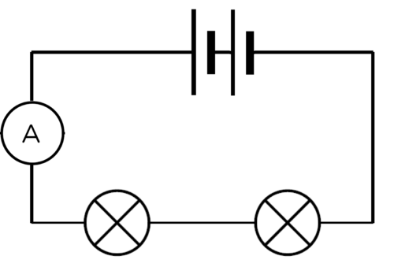Circuit 1
Remove the ammeter and close the circuit again.
Insert the ammeter, in series, between the two torch bulbs.
Measure the current strength using the ammeter. Draw a circuit diagram of this set-up.
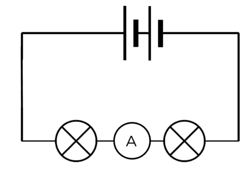Circuit 2.
Remove the ammeter and close the circuit again.
Insert the ammeter, in series, between the last torch bulb and the negative terminal of the battery.
Measure the current strength using the ammeter. Draw a circuit diagram of this set up.
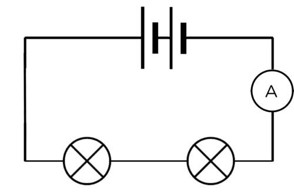Circuit 3.
Complete the following table:
Position of ammeter in circuit
Ammeter reading (A)
Between positive terminal of battery and first bulb
Between two bulbs
Between negative terminal of battery and last bulb
The ammeter readings should be the same at any point in the series circuit.
What can you conclude from this about the current in a series circuit?
The current strength is the same at any point in a series circuit.
A parallel circuit provides more than one path for the electric current to move through the circuit.
Parallel circuit
Draw a circuit diagram for this circuit
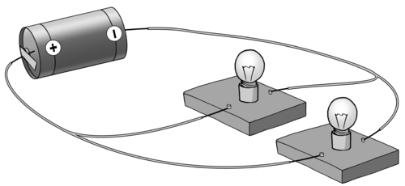
The circuit diagram should look as follows:
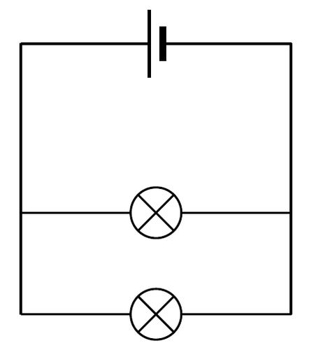
Cells in parallel
We saw that connecting cells in series increases the amount of energy supplied to the electrons. The potential difference increases. Let's investigate what happens when we add cells in parallel in a circuit.
What happens to the current and potential difference in a circuit when adding cells in parallel?
If you do not have sufficient equipment to allow all the learners to attempt these circuits. Use the PhET simulation software which can be obtained from bit.ly/17vBMBX
HYPOTHESIS:
Write a hypothesis for this investigation.
A possible answer: Increasing the number of cells connected in parallel will increase the current and potential difference in the circuit.
Remember that the hypothesis does not have to be "correct", but it must just mention the variables that are to be investigated and the relationship which is expected to be observe.
MATERIALS AND APPARATUS:
three 1,5 V cells
insulated copper conducting wires with crocodile clips
ammeter
voltmeter
resistor
METHOD:
Construct a series circuit with 1 cell and the ammeter in series.
Connect the voltmeter in parallel with the cell as shown in the circuit diagram.
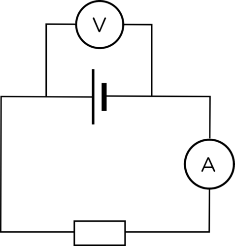
Record the readings in the table below.
Add a second cell in parallel with the first cell as shown in the diagram.
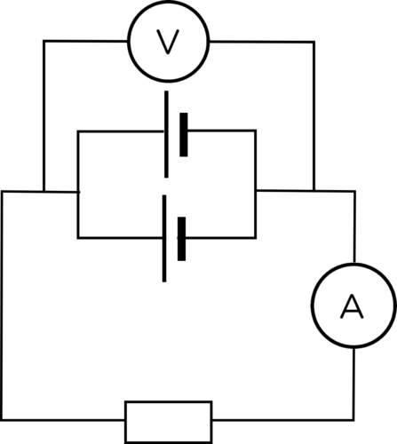
Record the new readings in the table below.
Add the third cell in parallel with the other two cells. Draw a circuit diagram for this in the space below.
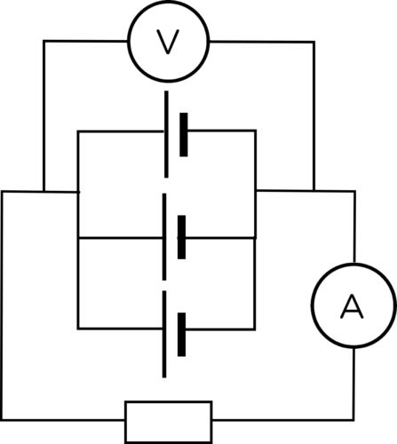
Record the new readings in the table below.
RESULTS:
Complete the following table:
Number of cells in parallel
Ammeter reading (A)
Voltmeter reading (V)
1
2
3
CONCLUSION:
What can we conclude regarding the effect of adding cells in parallel into a circuit?
Connecting more cells in parallel into a circuit does not affect the current strength and the potential difference in the circuit.
What have we learned? When we connect two cells in parallel with each other, the overall potential difference is the same as if we only had one cell. Therefore if both cells are 1,5 V, then the overall potential difference for the circuit is still 1,5 V. The current is the same as if there was only one cell because the electrons only travel through one of the cells.
What advantage would we get from connecting cells in this way? Discuss this with your class.
When we connect cells in parallel we supply alternative pathways for the current to follow. This means that each of the cells last longer than if they were in a series circuit. Also if one cell fails, the circuit will still have another cell.
Resistors in parallel
Parallel circuits have more than one pathway for the current. Let's look at how adding resistors in parallel affects the current strength.
Adding resistors in parallel
This activity is a revision of the investigation completed in Grade 8. The learners might have forgotten what happens in a parallel circuit and it is worth repeating the activity.
MATERIALS:
1,5 V cell
3 torch bulbs
insulated copper conducting wires
switch
ammeter
The switch and ammeter are not strictly necessary for this experiment. They can be left out if you do not have enough switches or ammeters.
INSTRUCTIONS :
Construct the circuit with the cell, ammeter, 1 bulb and the switch in series.
Close the switch.
Note how brightly the bulb is shining, write down the ammeter reading. Draw a circuit diagram of your circuit.
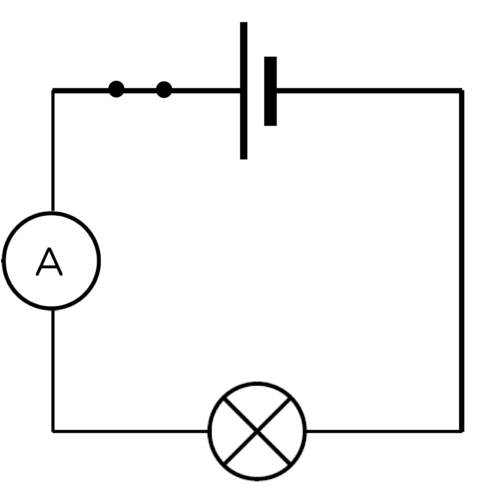
Open the switch.
Add another light bulb, in parallel to the first, into the circuit.
Close the switch.
Note how brightly the bulbs are shining and write down the ammeter reading. Draw a circuit diagram of your circuit.
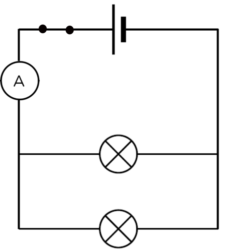
Open the switch.
Add the third light bulb, in a parallel to the first two, into the circuit.
Close the switch.
Note how brightly the bulbs are shining and write down the ammeter reading. Draw a circuit diagram of your circuit.
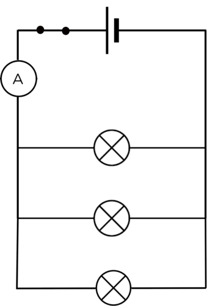
QUESTIONS:
What happened to the brightness of the bulbs and the ammeter reading as more light bulbs were added in parallel?
The brightness increased and so did the ammeter reading.
Explain your observations from question 1.
As more resistors were added in parallel, the resistance of the circuit decreased as the current is provided with alternative pathways, and the current increases with each resistor in parallel.
In the last activity, we only measured the current in the main branch of the circuit. What happens to the current in a parallel circuit?
Current in a parallel circuit
This is also a revision activity of what learners covered in Gr 8.
MATERIALS:
insulated copper connecting wires
two 1,5 V cells
three identical torch light bulbs
ammeter
METHOD:
Set up a parallel circuit with two cells in series with each other and three torch light bulbs in parallel with each other.
Insert an ammeter in series between the cells and the first pathway as shown in the diagram.
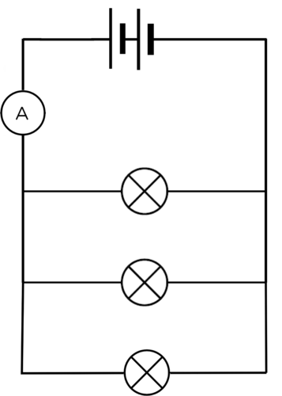
Measure the current strength using the ammeter.
Remove the ammeter and close the circuit again. Insert the ammeter, in series, in the first pathway.
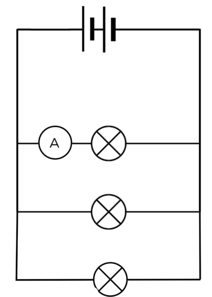
Measure the current strength using the ammeter.
Insert the ammeter, in series, in the second pathway.
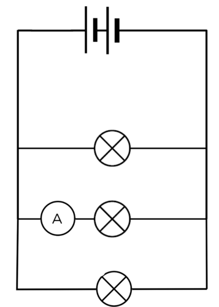
Measure the current strength using the ammeter.
Insert the ammeter, in series, in the third pathway.
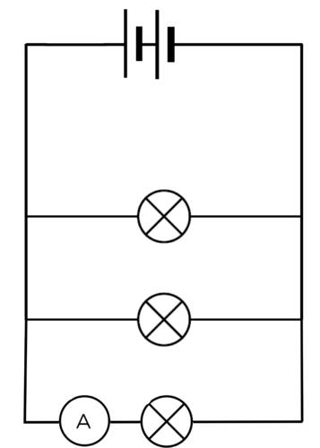
Measure the current strength using the ammeter.
Insert the ammeter, in series, between the first pathway and the batteries on the opposite side to the first reading.
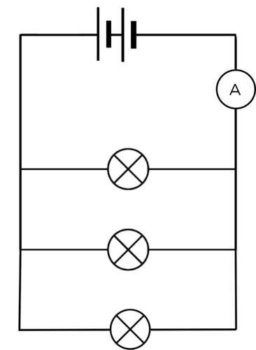
Measure the current strength using the ammeter.
Draw a table in the following space to record your readings.
An example table is:
Table showing the ammeter readings at different positions in a parallel circuit.
Position of ammeter in circuit
Ammeter reading (A)
between the cells and first pathway
in the first pathway
in the second pathway
in the third pathway
between the first pathway and the cells
QUESTIONS:
What do you notice about the current in the main branch and the current in the pathways?
The current in the main branch is bigger than the current in each pathway.
Add up the currents in each pathway through a bulb. What do you notice?
Learners should note that the currents in each pathway through the bulbs add up to the total current.
Use the following diagram and write an equation to illustrate the relationship between:
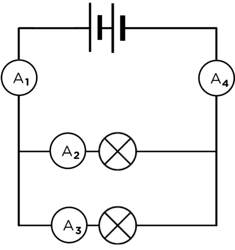
A1 and A4.
A1, A2 and A3.
A4, A2 and A3.
A1 = A4
A1 = A2 + A3
A4 = A2 + A3
Water flow analogy: series and parallel circuits (video).bit.ly/19nWOCB
When we add resistors in parallel to each other the total resistance decreases and the current increases. Why does this happen? Adding resistors in parallel provides more alternative pathways for the current. Therefore it is easier for current to move through the circuit than if all the current had to move through one resistor.
Imagine that you are sitting in a school hall during assembly. You are bored and waiting for the end so that you can go out to break to chat to your friends. There is only one exit from the hall. When you are dismissed, everyone has to exit through the same door. It takes a while because only some learners can leave at a time.
Now imagine that there is a second door that is the same as the first door. Now you and your friends have a choice of which door to go through. The number of learners that exit the hall together will increase and some of you will exit through the first door while others will exit through the second door. No one can go through both doors at the same time.
This is similar to the way current behaves when in a parallel circuit. As the electrons approach the branch in the circuit, some electrons will take the first path and others will take the other path. The current is divided between the two pathways. We say that resistors in parallel are current dividers. Although both pathways provide resistance, the total resistance is less than if there was just one pathway.
We are now going to look at the potential difference across each resistor in a parallel circuit.
Measuring the potential difference across components in a parallel circuit
If you do not have sufficient equipment to allow all the learners to attempt these circuits. Use the PhET simulation software which can be obtained from bit.ly/17vBMBX
It would be sensible to use PhET simulations for this investigation due to the large amount of equipment required. If you do not have access to the PhET simulations then it would be a good idea to do this as a demonstration.
INVESTIGATIVE QUESTION:
What is the relationship between the potential difference across the battery and the potential difference across the resistors in a parallel circuit?
HYPOTHESIS:
Write a hypothesis for this investigation
This is learner dependent. The learners must state the relationship that they expect to see between the potential difference across the individual resistors and the potential difference across the battery. An example could be: The potential difference across each resistor is equal to the potential difference across the battery.
MATERIALS AND APPARATUS
three 1,5 V cells
insulated copper conducting wires with crocodile clips
two torch light bulbs or resistors
three voltmeters
a switch
3 ammeters
You should use light bulbs or resistors of different strengths to demonstrate that the potential difference across each is still the same when they are connected in parallel.
METHOD
Construct the following circuit:
If the learners are doing this investigation in small groups, make sure that their circuits are correct and that the voltmeters are connected in parallel.
Note the readings on the 3 voltmeters and ammeters.
RESULTS:
Record the readings here in the table and write them onto the circuit diagram above:
Voltmeter
Reading (V)
Ammeter
Reading (A)
V1
A1
V2
A2
V3
A3
These readings will depend on the experimental setup available in your school lab or on the PhET simulations. The trend should be that the readings on V2 and V3 and V1 are equal and that A2 and A3 add up to A1.
What do you notice about the readings on V2 and V3 when compared to V1?
Learners responses may vary but they should notice that the readings on V1 ,V2 and V3 are equal.
Add the readings on A2 and A3 together. What do you notice?
This answer will depend on the accuracy of the readings on the ammeters. The learners should see that the sum of A2 and A3 is equal to the reading on A1.
Explain the behaviour of the electrons in the circuit based on the ammeter readings.
The electrons have more than one path to follow and so some travel through the first path and the rest travel through the second path. All of the electrons travel through A1.
CONCLUSION:
Write a conclusion for this investigation based on the investigative question.
The potential difference is the same across the battery and each resistor in parallel in a parallel circuit.
Extension:
This is an extension to do some calculations which is not required at this level. However, they are very simple equations and also highlights to learners that one can calculate the resistance. It is also important that learners realise that they will do many calculations in Gr 10-12 should they carry on with Physical Sciences.
The video listed in the Visit box on 'Voltage, current and resistance' provides a clear explanation of the relationship between these concepts. The video also makes use of the PhET simulation to build electric circuits, available at this link: bit.ly/1gqqTIa Watch the video to get a sense of how to use simulations in your classroom to explain and teach concepts.
Do you know that we can calculate the resistance of each light bulb in the circuit used in this investigation? We have seen that the current (I) through a resistor is inversely proportional to the resistance ( R) and the potential difference across a resistor (V) is directly proportional to the resistance.
This relationship is summarized in the following equation: R = V/I
The unit of resistance is the ohm (Ω) which is defined as a volt per amp of current. This can be written as:
1 ohm = 1 volt/amp
We can therefore calculate the resistance. An example is shown here using the values in this circuit diagram:
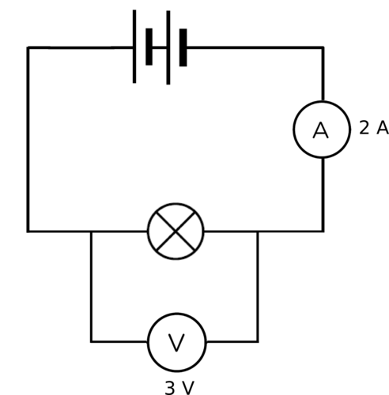
R = V/I
= 3 V/ 2A
= 1.5 Ω
In this investigation, you measured the potential difference (in volts) and the current (in amps) for each bulb. Use these measurements to calculate the resistance for each bulb in your circuit.
Resistance of bulb 1 = V2/A2
Resistance of bulb 2 = V3/A3
The relationship described here between current through a resistor, the resistance of the resistor and the potential difference across the resistor, is called Ohm's Law.
What have we learned from this investigation?
The current in a parallel circuit divides when it enters the separate branches. The total current is the sum of the current in the branches.
The potential difference across the branches of the circuit is the same as the potential difference across the battery.
Series and parallel circuits
This activity will show the learners the advantage of using a parallel circuit in a household circuit. When one light bulb is removed from a series circuit, the single pathway is broken and current no longer moves through the circuit. When one light bulb is removed from a parallel circuit, there is still a complete pathway for the current to move through and so the other light bulbs still function.
If you do not have sufficient equipment to allow all the learners to attempt these circuits. Use the PhET simulation software which can be obtained from bit.ly/17vBMBX
MATERIALS:
two 1,5 V cells
insulated copper conducting wires
two torch light bulbs
INSTRUCTIONS:
Set up a series circuit with the two cells and the two torch light bulbs. Are both torch lights shining?
Both torch lights are shining.
Disconnect one of the torch light bulbs. What happens?
Both torch lights are no longer shining.
Set up a parallel circuit with two cells and the two torch light bulbs in parallel with each other. Are both torch lights shining?
Both torch lights are shining.
Disconnect one of the torch light bulbs. What do you notice?
The torch light bulb left in the circuit is still shining.
QUESTIONS:
Why did the series circuit stop working when one of the light bulbs was removed?
The single pathway in the series circuit was broken by the removal of the light bulb. This means that current can no longer move through the circuit and it stops working.
Why did the light bulb in the parallel circuit keep shining after you removed the other bulb?
One of the pathways was broken by the removal of the light bulb but the other pathway provided an alternative for the current to travel through.
Which type of circuit, series or parallel would be more useful in a household circuit? Why?
The parallel circuit would be more useful because light bulbs often break or fuse. If we use a parallel circuit, the rest of the light bulbs and appliances in the house can still function. If we use a series circuit then one broken appliance would mean that everything stops working.
Parallel circuits are useful in household circuits because if one pathway stops working then the other pathways can still work. So if your bathroom light bulb breaks, the rest of the lights or appliances in the house can still be used. If your house used a series circuit then all the lights and appliances in the house would stop working if one item broke. You can also turn lights on in different rooms at different times without having to turn all the lights on in the whole house at once.
An example of a series circuit is a set of tree lights. Each light bulb is connected in series with the others. This means that if even one breaks then all will stop working. To find the broken one and fix it, you would have to test every bulb.
A series circuit provides only one pathway for the electrons to move through the circuit.
Increasing the number of cells connected in series, increases both the current strength through the circuit and the potential difference across the cells.
Increasing the number of resistors in a series circuit increases the overall resistance of the circuit.
Resistors connected in series are potential dividers. The sum of the potential differences of the resistors is equal to the potential difference of the battery.
The current strength in a series circuit is the same throughout the entire circuit.
A parallel circuit provides more than one pathway for the electrons to move through the circuit.
Increasing the number of cells connected in parallel with each other has no effect on the current strength and the potential difference of the circuit.
Increasing the number of resistors connected in parallel decreases the overall resistance of the circuit.
Resistors connected in parallel are current dividers. The current has more than one pathway to move along and so the current divides between the paths. The sum of the current strengths in the pathways is equal to the current strength before and after the branch in the pathway.
The potential difference across each pathway is equal to the potential difference across the battery.
Parallel circuits are used in the lighting systems in buildings.
Concept map
Complete the concept map on the next page. Remember that you can also add in your own notes on this page to make your summary more comprehensive and easier for you to study from for tests and exams.
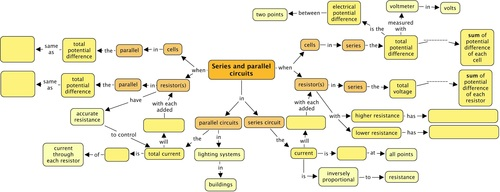
Teacher's version
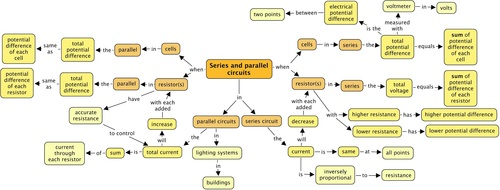
Revision questions
Draw the following circuit diagrams.
A closed circuit with one cell, two light bulbs and a switch in series. [2 marks]
An open circuit with two cells, two light bulbs and a switch in series. [2 marks]
A closed circuit with 1 cell and a resistor in series, with an ammeter to measure the current and a voltmeter to measure the potential difference of the cell. [2 marks]
A closed circuit with two cells in series and two light bulbs in parallel. [2 marks]
A closed circuit with an ammeter and resistor in series and three cells in parallel, with a voltmeter connected to measure the potential difference across the three cells. [2 marks]
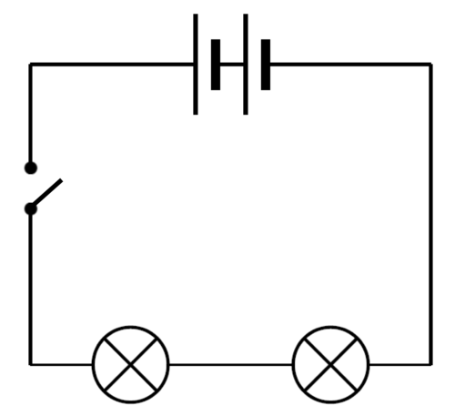
Look at the following circuit diagram. Identify the number of bulbs, switches and cells in this circuit. Identify whether they are in series or parallel. [3 marks]
There are 3 cells in series with 1 bulb and a switch, there are two bulbs in parallel and a switch in series with one bulb.
Ian has bought a string of Christmas tree lights and has hung them in the tree and plugs them in. One of the light bulbs breaks.
What happens to the rest of the light bulbs? [1 mark]
Explain your answer to question a. [2 marks]
The rest of the light bulbs stop working.
The light bulbs are connected in series with each other. If one breaks then the circuit is broken and no current moves through the circuit.
Household circuits are parallel circuits. Explain why it is better to use a parallel circuit in a house than a series circuit? [2 marks]
This enables you to switch one light on in a room without turning all the lights on. If one part of the parallel circuit breaks then the rest of the circuit can still function as the other pathways are still complete.
Answer the following questions on the circuit below.
Circuit
Values for each reading [2 marks]
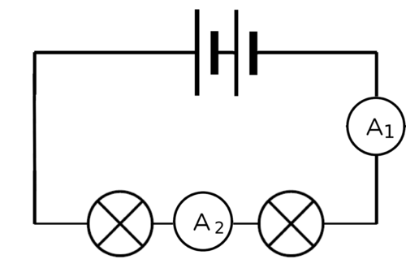
A1 = 3 A
A2 =
Work out the missing values.
Explain your answer above. [1 mark]
A2 = 3 A
NOTE: There are many different possible variations on the diagrams in this question. You can change the values or the layout of the circuits in order to give extra practice to any learners that are struggling with this concept.
The current is the same at all points in a series circuit.
Answer the following questions on the circuit below.
Circuit
Values for each reading [2 marks]
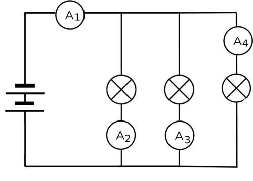
A1 =
A2 = 3A
A3 = 3A
A4 = 1A
Work out the missing values.
Explain your answer above. [2 marks]
A1 = 7 A
The current in a series circuits splits through each parallel branch such that the total current in the main circuit is equal to the sum of the currents in each branch.
Answer the following questions about the circuit below.
Circuit
Values for each reading [2 marks]
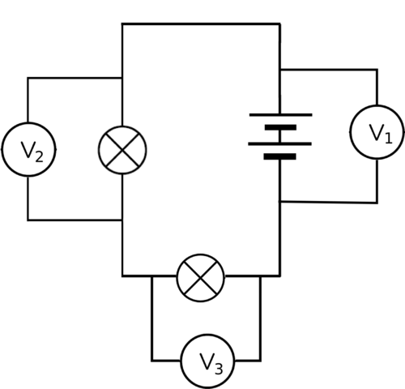
V1 = 12 V
V2 = 8 V
V3 =
Work out the missing values.
Explain your answer above. [2 mark]
V3 = 4 A
The potential differences across the battery in a series circuit is equal to the sum of the potential differences across each resistor.
Answer the following questions about the circuit below.
Circuit
Values for each reading [2 marks]
V1 = 10 V
V2 =
V3 =
Work out the missing values.
Explain your answer above. [1 mark]
How many bulbs will still glow if switch S1 is opened? [1 mark]
How many bulbs will still glow if switch S2 is opened? [1 mark]
V2 and V3 = 10 V.
The potential difference across the battery in a parallel circuit is equal to the potential difference across each resistor in parallel.
No bulbs will glow.
Two bulbs will glow.
Work out the missing values below.
Circuit
Values for each reading [2 marks]
Each cell in this circuit is 1,5 V. What is the reading on V?
The value is 1,5 V.
Answer the following questions about the circuit below.
Circuit
Values for each reading [4 marks]
V1 = 9 V
V2 =
V3 =
A1 = 6 A
A2 = 2 A
A3 =
Work out the missing values.
What would the reading on A2 show if switch S2 is opened? [2 marks]
Explain your answer to the previous question. [2 marks]
Which bulb, A or B, has the higher resistance? [2 marks]
Explain your answer to the previous question. [2 marks]
Extension question: Calculate the resistance of Bulb A and Bulb B. Show your working in the space below. [4 marks]
V2 and V3 = 9 V.
A3 = 4 A.
It would show 6 A.
When switch S2 is opened, the circuit becomes a series circuit and all the current goes through the one branch, through A2 and so A1 and A2 will show the same reading, 6 A.
Bulb A has the higher resistance.
Bulb A has the smaller current which goes through it, and therefore it must have the higher resistance as the larger the resistance, the smaller the current (they are inversely proportional).
This is an extension question as it is not required to be able to calculate resistance. An example was covered in the content.